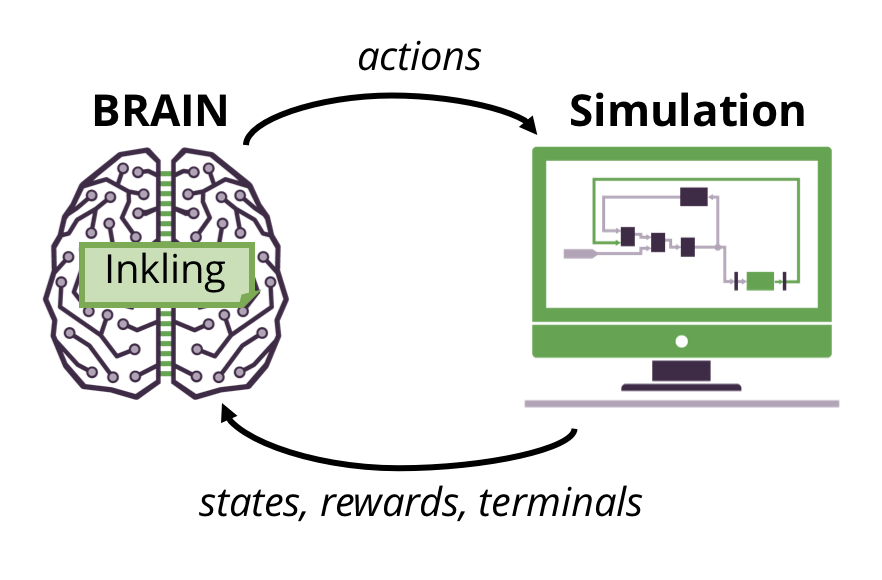

Overview

Welcome to Inkling, Bonsai AI’s special purpose programming language for training AI.
Inkling is a declarative, strongly typed programming language specifically designed for artificial intelligence (AI). It abstracts away the vast world of dynamic AI algorithms that require expertise in machine learning and enables more developers to program AI. An Inkling file contains the concepts – what you want to teach the AI – and the curriculum, – how you want to teach the concepts – necessary to train your BRAIN. Before you read through this section about the Inkling language, you should familiarize yourself with the various components of the Bonsai Artificial Intelligence Engine, which you can read about in our Getting Started Guide.
If you’re interesting in finding out more about what’s going on under the hood of the Bonsai AI Engine, check out Understand AI Engine Components.
Inkling: A New Language
What kind of language is Inkling?
Inkling is a special purpose language for writing AI programs. The language has a blend of declarative and functional styles; it’s modeled after ideas in SQL and python. We like to describe Inkling as the world’s first machine teaching language.
What is Machine Teaching?
Machine teaching is a new programming paradigm. It expresses the solution to a problem in terms of how you teach the computer to find the solution as opposed to how to calculate the solution. Machine teaching focuses on:
- What do you want the computer to know? Machine teaching captures the concepts and their relationship to each other and forms a directed graph of the concepts.
Imagine learning to play baseball; there are a lot of concepts involved. It goes beyond just the rules of the game, and includes things like batting stance, bat grip, eye hand coordination, etc.
- How do you go about teaching those things? Machine teaching focuses on how the problem can be taught, not how it can be calculated.
Imagine teaching a child to play baseball. You can’t just explain the whole game to them and expect them to understand how to play. You’d break down learning into pieces, and create a series of lessons that would help them learn how to play baseball.
Let’s say, to start, you wanted to teach them the concept of hand-eye coordination. There would be a sequence of lessons to do this. You might start with a whiffle ball on a tee, progress to a tee that pops the ball up, move to underhand pitches, and then overhand pitches. You could continue to build upon your hand eye coordination concept with things like curved pitches, different styles of catching, and other exercises. It’s all teaching one concept - hand-eye coordination - using progressive lessons to do so.
Inkling is a Special Purpose Language
Inkling is a special purpose language, meaning that it is a language for writing programs for a particular domain. This is as opposed to a general purpose language, which would allow you to write anything you could imagine. C++, Python, Ruby, and Java are all examples of general purpose programming languages.
Inkling is a Functional language
In a functional programming language, a function defines a scope and can only modify what is in that scope. In Inkling, every concept takes data as input and sends data as output. Each concept is self contained, and there is no shared information between concepts unless you explicitly declare it. This means that no information is kept as state unless you specifically declare it. This makes Inkling a functional programming language.
For example:
- Python and Javascript can be programmed in a functional way, but they are not pure functional languages.
- F# is a pure functional programming language.
- R, matlab, Java and prolog are not functional programming languages.
White Space Insensitive
Inkling is white space insensitive. Internally, we prefer to use four spaces to indent lines. This is a stylistic choice. In this document, any mention of an “indentation” or a line “being indented” refers to using four spaces at the start of a line.
Mental Models
Mental models are a way of organizing concepts so that you can structure a solution to your AI problem as a workflow. Concepts are the ideas that you want to teach your BRAIN. When you create your concepts, you’re going to start with the final concept that you want to teach your BRAIN and support it with other feature and skill concepts. These additional concepts appear upstream of your main concept, and the information output from those concepts helps the Bonsai AI Engine teach your main concept to your BRAIN. Mental Models enable you to determine and plan the concepts that are taught to your BRAIN.
For more information about Concepts, refer below to Concepts and the Concept Reference.
Determining Mental Models
Your mental models should help you plan the concepts you’re going to write in your Inkling file. Therefore, when you’re determining your mental models, we suggest that you think about the condition that means the AI has successfully learned what you wanted it to learn. This could be:
- Learning to play a game
- Learning to recognize what a handwritten digit is
- Learning to tell if something is red or what color something is
- Learning to save electricity in your home
- Learning to manage a process to specific guidelines
After you’ve determined your success condition or criteria, you want to decide what the AI can do to prove it has successfully learned that condition. In a game, this could be, “I think if the AI can get a high score, it has successfully learned to play the game.” For recognizing red things, this could be, “I think if the AI can successfully tell when something it is shown is red or not red it will have learned to recognize red things.” This becomes your final concept, and it also ties into your objective (reward), which measures how successful the AI is at learning this concept.
For more complex goals and many use cases, you need multiple concepts that all become part of training your final concept. These additional concepts support your final concept and can also reduce the time it takes to train your BRAIN. For more information about determining concepts, refer to the next chapter.
For each concept, you will need to determine what the AI needs to take in to make its decision and what the AI returns after it has decided. All of the information your AI needs to take in before it can train on any of the concepts is bundled together and labeled as input. Each concept returns some information, but additional concepts feed their returned information to assist in training the final concept. Training on the final concept returns information that is sent from the BRAIN to the simulation. This is the output.
Your mental model can be mapped from left to right, starting with your input. Your other concepts come next, followed by your final concept, and finally, to the right, is your output. Your output is fed back through the Bonsai AI Engine to the application. You can draw arrows between the various nodes to represent data flow. Your concepts are trained in order. To visualize this more clearly, see our expanded example below.
Examples
Example: Breakout
concept get_high_score
is classifier # classifiers pick one of a small set of actions
predicts (PlayerMove) # this concept's output will be a move
follows input(GameState)
feeds output
end
For example, our mental model for teaching an AI to play the game Breakout looks like this:

Single concept model for learning breakout
The input is a snapshot of the game in its current state.
The concept get_high_score, is our final concept. It describes what we want our BRAIN to learn to play the Breakout simulation, which means we’ve decided that being able to get a high score means that it’s learned how to play the game. This single concept mental model is sufficient to train a BRAIN to play the game, but this training may take a long time.
The output is the move that the AI wants to make. It chooses from left, right, or no move. The input and output are described in the schemas portion of the Inkling file.
To speed up training time and enable to learn the get_high_score concept more concretely, you can expand this mental model and include more concepts.
concept get_high_score
is classifier
predicts (PlayerMove)
follows input(GameState), keep_paddle_under_ball
feeds output
end
concept keep_paddle_under_ball
is classifier
predicts (PlayerMove)
follows input(GameState), ball_location
feeds output
end
In this example, we’ve added two extra concepts that support our final concept and give our BRAIN more information to work with. The concept of ball_location feeds information into the concept keep_paddle_under_ball, and that concept feeds information into get_high_score.
The input remains the same as above. The AI has two additional concepts to train. When it is training the ball_location concept, it takes in the input and returns the coordinates of the ball. On the keep_paddle_under_ball concept, it takes in the input and the ball coordinates from ball_location. Then, that concept returns the best move to attempt to keep the paddle underneath the ball. The final concept, get_high_score, takes in the input and the move returned from keep_paddle_under_ball and returns the move it wants, which is the output sent to the simulator through the Bonsai AI Engine. Each of these concepts are trained from input to output.
Concepts
A concept in Inkling is an (abstract) idea. In Inkling, the concept defines what you are going to teach the AI. For more information about using the concept keyword, refer to the Concept Reference.
Every Inkling program needs at least one concept. If there is more than one, determine which one is your main concept. You may have additional concepts to assist in teaching the main concept to your AI.
Fact and Strategy
When you’re thinking about concepts, you can categorize them into two groups: fact and strategy. A fact concept describes the state of a thing or things, such as an object, a ball, a character, an enemy, a light, a person, etc. The fact concept could be the state of whether that thing is on or off, is hot or cold, is a number or a letter, etc. It can also be a location. A strategy concept describes a method or behavior, such as “avoid ghosts”, “keep the paddle under the ball”, “don’t run into walls”, “turn lights off”.
For a simulator, your final concept is a strategy concept.
In a Game
If you want to teach your AI to play a game, first choose a main concept. The result of the AI learning this concept should be that it knows how to play the game.
- A fact concept would describe something about the current state of the game.
- A strategy concept would describe a behavior that, if learned, would help the AI achieve its goal.
For example, consider an Inkling program that teaches an AI to play Pacman. This is a game where you eat dots and run away from ghosts, and the higher the score you get, the better you do. Your main concept could be to get a high score.
Supporting concepts might include eat_dots, avoid_ghosts, eat_fruit, and avoid_blue_ghosts. These are strategy concepts. You may also have concepts called dot_location, ghost_location, or ghost_color. These are fact concepts.
You can use a mental model to help you plan out your concepts and data flow.
Determining Concepts
Determining what concepts to teach may take time. You can use mental models to work out what concepts to write and how data should flow between them.
Examples
Example: Tetris
Consider the game Tetris. The main concept we want to teach our AI will be the same as the main concept of PacMan. We want the AI to get the highest score possible. This represents that the AI has learned the game. To assist in teaching the main concept, we need to think through the various facts that the AI needs to learn. Here’s a short list, but you might be able to think of other facts you’d want to use:
active_tetrimino: the tetrimino (piece) that is active. (fact)tetrimino_location: the location of the active tetrimino. (fact)tetrimino_speed: how fast the tetrimino is moving. (fact)clear_base: fit tetriminos into the base to clear pieces of it. (strategy)
Any of these facts could be written into supporting concepts that would give information to your main concept.
Example: Home Automation
In our home automation example, let’s imagine that we want to save energy by turning off the lights in empty rooms. Our main concept is going to be something like turn_off_lights_empty_rooms. If the AI learns to do the main concept, then we’ll have solved our problem. To support this main concept, we need to think about the various facts that the AI needs to know in order to accomplish that behavior. Here’s a short list, but you might be able to think of other facts that you’d want to use:
light_state: the on/off state of the lights in each room. (fact)people_home: The total number of people in the house. (fact)person_location: The location of each person/the room each person is in. (fact)done_with_it: The amount of time a person has been out of a room. Or, possibly, the location of the person who left this room. (fact)definitely_empty: don’t shut off lights if someone is coming right back. (strategy)still_in_use: (a variant of the one above) don’t turn off the lights if an empty room might be reoccupied soon.
Any of these facts could be written into supporting concepts that would give information to your main concept.
Writing Concept Statements
In Inkling, your concepts are written as concept statements. The Inkling concept statement includes an is clause which specifies whether the concept is a classifier or an estimator. This tells the AI what kind of information or prediction it is going to return.
In its simplest form, a classifier is taking in input and returning a classification. In reality, the classifier is taking in input and assigning a score to the possible classifications of that input from a given set. You would specify is classifier on your concept if your outcome set is small and unchanging. For example, you want your AI to recognize a written number from 0-10. Your outcome set is 0,1,2,3,4,5,6,7,8,9,10. For every handwritten number that it is shown, it assigns a probability to each number and returns the most likely value (the one with the highest probability).
Estimators are used for larger outcome sets. You would specify is estimator on your concept if you are estimating a value in a very large range, like integers from 1 to 1000, or a continuous value like a fraction between 0 and 1. Estimators are often used for control. For example, if you need to turn a dial a certain amount, the AI has to return the direction and how much the dial is being turned. The direction is discrete, left or right, but the amount of turning could be modeled as an continuous number.
Determining Concept Statements
Deciding what concepts to teach may take time. Use your mental models to work out what concepts to use. After you’ve created your mental model, you can write your schemas (input and output) as well as your concepts. You need to:
- pick a descriptive name for your concept.
- determine whether it is a
classifierorestimator - know where it comes in the mental model, and list any concepts that come before it.
Every concept is trained by a curriculum. These will be covered below.
For more information on the concept statement, see the Concept Reference.
Schemas
Schemas describe a record and its fields. They contain a set of named data types that can be used throughout the system. They can include the common basic data types and native data types for working with common media formats (images, audio recordings). You add schemas in Inkling using the schema keyword.
Types (or data types) are representations of values of data. A type informs the system what the meaning of the data is, the possible values of that data is, what operations can be performed on that data, and the way the data can be stored. Types are the most basic building blocks of data manipulation.
In Inkling we need types, because the AI needs to understand the data it is sent. Also the AI needs to know how to represent the prediction it sends back to the program that you have deployed it with.
Inkling is also a strongly typed language, which means that you will receive an error if values are not compatible with their expected type. This means you need to pay attention to what types you choose.
Inkling supports various types, including (but not limited to) primitive types, which include types for integers, floats, bytes and strings, as well as types commonly used with machine learning (for example, Luminance). See the section on Inkling types for more information.
Constrained Types
Inkling supports constrained types in schemas (as well as for configuration of lessons). Constrained types use range expressions to constrain the values of the type to values defined by a range expression.
A range expression has the effect of constraining the values of the type to values defined by the range expression. In a schema, this constrains the values in the field. In lessons, this constrains the values of the placeholder being configured. In both cases the syntax is the same.
Here are some examples of constrained types:
schema MyOutput
UInt8 {0,1,2,3,4} label, # a list of UInt8 values
Int64 {0:5:100} x, # start:step:stop, {0,5,10,...,95,100}
Int64 {0:100} y, # start:stop, default step= 1, {0,1,...,99,100}
Int64 {0..100:25} z, # start..stop:numsteps, so step= 4, {0,4,8,...,96,100}
Float32 {0..2:5} a # start..stop:numsteps, gives {0, 0.5, 1.0, 1.5, 2.0}
end
Defining Schemas
Examine the input, returned data, and output of your mental model when defining your schemas. You need to match these requirements to Inkling types.
Inputs and Outputs
Input is a stream of information that is fed into your BRAIN (your AI). The Bonsai AI Engine uses this information to help train the BRAIN or make a prediction.
In Inkling, Output is a stream of information returned as a prediction that your BRAIN sends back to an application. It could be sent back to a simulator, if training is in process, or it could be send back to your deployed application, where it might be used for control or optimization. The data in input and output streams are described by schemas. Schemas are declared in your Inkling program, and they contain information about the data types contained in the stream. For example, if you want to teach your AI, to recognize the shape ‘square’, you might give it a picture of a shape. That picture would be an input. The BRAIN answers yes (this is a square) or no (this is not a square). That answer is the output. Your Inkling file to teach your AI would contain one schema for describing the data type of the input (Luminance, an image type) and another for the output (Bool). For more information about schemas, refer to the Schema Reference.
How to pick types
- If your output is yes/no, true/false, or another dual relationship, you should use the
booltype. - Inkling supports signed and unsigned integers of various sizes as well as floating point (32 and 64 bit). More details can be found under Inkling Types.
Curriculum and Lessons
A curriculum in Inkling is used to define what and how to teach a concept. Each concept needs a corresponding curriculum to teach it, and every Inkling program must contain at least one curriculum. A lesson is part of a curriculum; it teaches a specific piece of the concept by specifying training and testing parameters and a stopping point (until). Lessons enable the AI to learn the concept bit-by-bit instead of all at once. Lessons are contained within curriculum statements. Each curriculum must contain at least one lesson.
Curriculum contain the lesson plan for the lessons that you are using to train your BRAINs. You must have one curriculum for every concept. A curriculum contains information about the training material that you’re using to train the BRAIN; this is a simulator, generator, or data set, and it contains an objective, which measures the performance of the BRAIN as it learns your concept. Curricula may also contain expressions that assign portions of your training material for testing. Finally, your curriculum contains lessons. Each lesson teaches a piece of the concept. A curriculum can contain multiple lessons to teach a single concept. Each lesson may contain different configurations for training the BRAIN. Configurations change how the Bonsai AI Engine uses the training source for training.
Determining Curriculum
Each curriculum trains a single concept, and every concept must have a curriculum. After you’ve determined your concepts, you will know how many curricula you need for your Inkling program. Curricula contain the information the Bonsai AI Engine uses to train your BRAIN on the concepts you’ve specified. They also specify the reward function (objective) for teaching a given concept. The reward function is a way the system concretely measures the AI’s performance as it learns the concept.
curriculum balance_curriculum
train balance
with simulator cartpole_simulator(CartPoleConfig) : (GameState)
objective open_ai_gym_default_objective
#lessons
end
For more information and examples, refer to the Curriculum Reference.
Determining Lessons
Each lesson specifies a portion of the training and, depending on the training sources, may contain information on configuring the training sources, training, testing, and a stopping point (until). When you’re determining your lessons, you need to consider what your training sources are and what piece of the concept you are training. For example, if you’re training with a simulator, you can place constraints on your simulation during training.
Configure Clause
The configure clause is part of a lesson statement. They inform the computer how to set up the simulator for training. You use configure to make sure you’re not always training from the beginning, but from a point that makes sense to enhance how your BRAIN is learning the concepts.
The configure clause uses the constrain keyword to create a set of conditions for the AI to train on the simulator. constrain references a schema that is associated with the simulator.
lesson get_high_score
configure
constrain episode_length with Int8{-1},
constrain deque_size with UInt8{1}
until
maximize open_ai_gym_default_objective
The configure clause supports placeholders as well. The placeholder name does not hold a specific value, but is a name of a range of values that the the Bonsai AI Engine inputs during training. The configure clause provides guidance to the Bonsai AI Engine on how the training for that lesson should be configured. It is not the same as an assignment in an imperative language, because it does not represent a unique value. The AI Engine has some degree of freedom in determining how to configure for training.
For more information and examples, refer to the Lesson Reference.
Objectives
The objective, often known in machine learning (ML) as the reward function, measures how well the AI is doing at learning the concept. Or, put differently, it is what you use to reward the AI.
This idea may be easier to understand with a few examples:
In our Breakout example, our concept was get_high_score. The score is how we are measuring how well the AI is doing at learning that concept.
If we are teaching the AI Pacman, and we are training the concept of avoid_non_blue_ghosts, we may measure how well the AI is doing at learning this concept by measuring the amount of time the AI manages to avoid non-blue ghosts. Our objective clause uses time as the reward.
In these examples, the objective, or reward, is one of the factors we use to measure how well the AI is training on the concept.
Determining Objectives
There are several factors you can use to determine what your objective should be. Before you even start determining your objectives, you need to know what your concepts and curricula are. A good objective should reward the AI more often and be proportional to the quality of of the behavior.
Frequency of Feedback
The frequency of feedback affects the speed of training. Ideally, the time between the AI’s decision making and whether or not the decision was good needs to be kept short. For example, if you’re teaching an AI to play Pacman, you want to choose an objective like score instead of an objective like beat level: in Pacman, your score changes often, typically many times during a level, but your level can only change 256 times, and only after many many actions. Your AI would have to beat an entire level to be rewarded, which is difficult to do without getting intermediate feedback about which actions along the way were good ones.
Proportional Feedback
The reward should be in proportional to the quality of the behavior (or the correctness of the behavior). When you are deciding what your objective is going to be, you need to consider that the AI will learn exactly what you ask it to learn. This can result in learning what you specified but not necessarily what you wanted. For example, if you ask an AI to play Pong (controlling both agents), and you use the objective of game time, the AI may learn that to get the longest time played, the paddle should remain in the same place. The ball will bounce back and forth between the two unmoving paddles – the AI learned exactly what you told it to learn, how to maximize the amount of time, but it didn’t really learn how to play the game.
In Inkling
In an Inkling program, your objective is going to be part of your curriculum statement.
curriculum _curriculumName
train _conceptName
with _trainingSpecifier
objective _objectiveName
# lessons are specified here.
end
Next Steps
Now that you’ve reviewed this guide, you can:
Check out our Advanced Platform Techniques (YouTube link) video to help you build and run complex Inkling on the Platform.
And we have these other resources that will enable you to maximize your AI development experience: